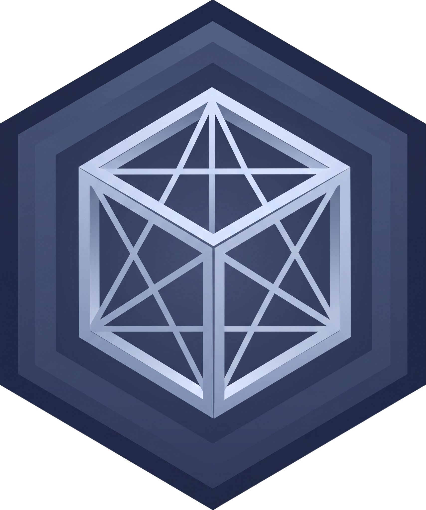

Dominando Z-index
Aprenda o poder do posicionamento e empilhamento de elementos.
Aprenda o poder do posicionamento e empilhamento de elementos.

Esta camada está na camada mais baixa (z-index: 0).
O Scrum é um framework ágil para gerenciar projetos complexos, focando em entregas incrementais e colaboração contínua. Ele se baseia em ciclos curtos (Sprints) que permitem adaptação rápida às mudanças e maior transparência para todos.
Lista priorizada de funcionalidades e requisitos do produto.
Iterações de tempo fixo (geralmente 2–4 semanas).
Reunião diária de 15 min para sincronizar o time.
A Extreme Programming (XP) é uma abordagem ágil que visa melhorar a qualidade do software e a capacidade de resposta a mudanças. Baseia-se em valores como comunicação, simplicidade, feedback e coragem para criar software de alta qualidade.

BDD é uma prática que alinha o desenvolvimento de software com as necessidades do negócio, usando uma linguagem ubíqua. Testes são escritos em linguagem natural, facilitando a comunicação entre desenvolvedores e stakeholders.
Dado que o usuário está autenticado
Quando ele acessa o painel principal
Então ele deve ver o resumo das suas atividades
TDD é uma abordagem onde os testes são escritos antes do código de produção. O ciclo Red-Green-Refactor garante código funcional, seguro e de qualidade.
Escreva um teste que falha.
Escreva o código mínimo para passar no teste.
Melhore o código mantendo os testes passando.
| Métrica | Sem Metodologias | Com Metodologias | Melhoria |
|---|---|---|---|
| Taxa de Entrega | 45% | 92% | 104% |
| Defeitos em Produção | 28% | 5% | 82% |
| Satisfação do Cliente | 65% | 96% | 48% |
| Tempo de Resposta | 14 dias | 3 dias | 79% |
O Scrum foca na gestão e organização do fluxo de trabalho, enquanto o XP foca em práticas técnicas de engenharia de software.
Sim, embora funcionem muito bem juntos: BDD valida o comportamento do negócio e TDD garante a qualidade das unidades de código.
Força o design modular desde o início e cria uma rede de segurança contra regressões.
Sim. É comum usar Scrum para gestão de sprints, XP para práticas de código, BDD para critérios de aceite e TDD nos testes unitários.
Comece adotando ciclos curtos de entrega, revisões de código e testes automatizados nas partes críticas do sistema.

Nossa equipe está pronta para ajudar você a evoluir na sua jornada de aprendizado.